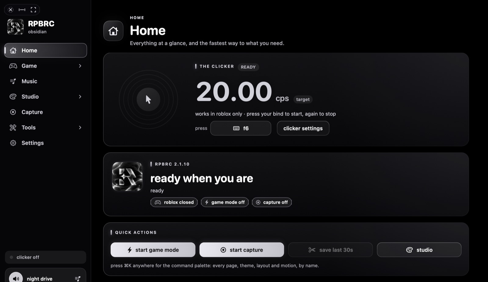

a little more focus.
position your crosshair exactly where you want it, with an overlay that works over fullscreen roblox.
crosshairless between you and the game.
free all-in-ones for mac & windows. client & external when you want more.
scroll to open the menu
introducing rpbrc
roblox should run as fast as your hardware allows. instead you get a *60 *fps *cap, settings buried in json files, and a pile of separate tools. rpbrc brings it into *one *clean *app — unlock your frame rate, apply tuned engine settings, and launch already optimized. free on mac and windows.
native clients — windows and macos
products — two free, two paid
max fps target — or fully uncapped
less switching. more playing.
from finding your rhythm to saving your best moments, the essentials are right where you need them.
find your rhythm
set your clicks per second and hold time. save the combinations that work for you, then switch with a keybind.
included in free & paidadjust clicks per second and hold time.
save a setup and switch without starting over.
frame-sync options and precision controls.
position your crosshair exactly where you want it, with an overlay that works over fullscreen roblox.
crosshairchoose your roblox font and icon colors. adjust the macos input and motion settings you care about.
mods & tweaksnative controls, clear settings, and a black-and-silver interface. everything together, without the clutter.
built with swiftuiinside the app
everything you need to make roblox run better, in one window. try it — the controls on the right work.
match your monitor — 120, 144, 240 or fully uncapped. drag the slider in the window. it’s live.
tested engine settings for every kind of pc. switch in a click, revert in a click.
cut shadows, post-processing, grass and textures further than roblox’s own settings go.
a live overlay with fps, frame time and ping, right on top of the game.
instant replay saves the last moments with your clip keybind. no obs required.
fonts, cursors, crosshair and app themes. black and silver by default, tuned to you.
target for every roblox window
applied before launch · revert any time
beyond the in-game quality slider
updated every frame
save the last moments with your clip keybind
the app and your crosshair
frame rate up to your display’s limit, or uncapped.
engine settings applied before launch, reverted in one click.
lower texture and lighting cost on older gpus.
fps, frame time, cpu / gpu load and ping.
clicker, profiles and keybinds, with cps & reaction practice.
instant replay and screenshots, no obs needed.
an overlay that works over fullscreen roblox.
themes, fonts and sounds for the client and the app.
performance
example figures to show the idea, not measured benchmarks. your results depend on your hardware, display and the game.
the lineup
start free with the all-in-one for your mac or pc. when you want more, rpbrc client and rpbrc external take it further.

one app for your whole roblox setup, native on mac and windows. unlock your frame rate, tune the engine and launch already optimized.
the full rpbrc experience. everything in the all-in-ones, plus the deepest tuning and customization we make.
runs alongside roblox in its own window. overlays, stats and controls on top of your game, without leaving it.
| feature | mac all-in-onefree | windows all-in-onefree | clientpaid | externalpaid |
|---|---|---|---|---|
| fps unlocker & engine presets | ||||
| instant replay capture | ||||
| crosshair overlay | ||||
| clicker & practice | ||||
| searchable flag library | ||||
| live fps, load & ping | ||||
| media library & editing | ||||
| customization studio | ||||
| runs outside the game window | ||||
| priority support |
a performance client for roblox on windows and macos. it unlocks your frame rate and brings engine settings, clicking, practice, replay capture and customization into one app.
download the free zip, unzip it, move rpbrc to your applications folder, and open the app. the app guides you through the permissions needed for the tools you use.
accessibility access lets the app read your keybinds and use clicking tools. screen recording access is used for capture. you can explore the other settings before enabling those tools.
support depends on the roblox client. some overrides may be ignored as roblox changes. results also depend on your mac and your setup.
yes. rpbrc has a windows client for windows 10 and 11 alongside the macos app. grab it from discord.
rpbrc client and rpbrc external are paid. join discord to ask about pricing and availability.
a good setup starts here
get the app. meet the community. make it yours.